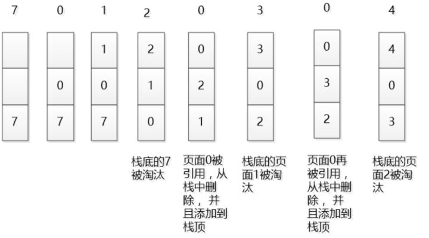
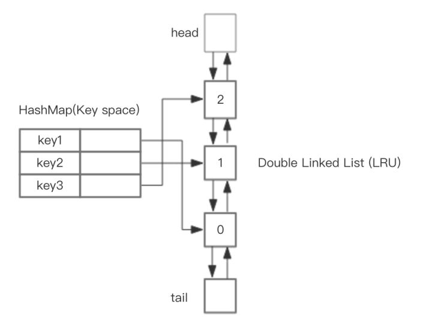

文章转载自：https://zhuanlan.zhihu.com/p/34133067
LRU简介
LRU是内存不够的场景下，淘汰旧内容的一种策略。LRU ,Least Recent Used，淘汰掉最不经常使用的。可以稍微多补充两句，因为计算机体系结构中，最大的最可靠的存储是硬盘，它容量很大，并且内容可以固化，但是访问速度很慢，所以需要把使用的内容载入内存中；内存速度很快，但是容量有限，并且断电后内容会丢失，并且为了进一步提升性能，还有CPU内部的 L1 Cache，L2 Cache等概念。因为速度越快的地方，它的单位成本越高，容量越小，新的内容不断被载入，旧的内容肯定要被淘汰，所以就有这样的使用背景。
LRU原理
在一般标准的操作系统教材里，会用下面的方式来演示LRU原理，假设内存只能容纳3个页大小，按照 7 0 1 2 0 3 0 4的次序访问页。假设内存按照栈的方式来描述访问时间，在上面的，是最近访问的，在下面的是，最远时间访问的，LRU就是这样工作的。

但是如果让我们自己设计一个基于 LRU 的缓存，这样设计可能问题很多，这段内存按照访问时间进行了排序，会有大量的内存拷贝操作，所以性能肯定是不能接受的。
那么如何设计一个LRU缓存，使得放入和移除都是O(1) 的，我们需要把访问次序维护起来，但是不能通过内存中的真实排序来反应，有一种方案就是使用双向链表。
基于 HashMap 和 双向链表实现 LRU
整体的设计思路是，可以使用 HashMap存储 key，这样可以做到 save 和 get key的时间都是 O(1)，而 HashMap的 Value 指向双向链表实现的 LRU的 Node 节点，如图所示。

LRU 存储是基于双向链表实现的，下面的图演示了它的原理。其中head 代表双向链表的表头，tail 代表尾部。首先预先设置 LRU 的容量，如果存储满了，可以通过 O(1) 的时间淘汰掉双向链表的尾部，每次新增和访问数据，都可以通过 O(1)的效率把新的节点增加到对头，或者把已经存在的节点移动到队头。
下面展示了，预设大小是 3 的，LRU存储的在存储和访问过程中的变化。为了简化图复杂度，图中没有展示 HashMap部分的变化，仅仅演示了上图LRU双向链表的变化。我们对这个LRU缓存的操作序列如下：
1 | save("key1", 7) |
相应的 LRU 双向链表部分变化如下：

s = save, g = get
总结一下核心操作的步骤:
- save(key, value)，首先在
HashMap找到Key对应的节点，如果节点存在，更新节点的值，并把这个节点移动队头。如果不存在，需要构造新的节点，并且尝试把节点塞到队头，如果LRU空间不足，则通过tail淘汰掉队尾的节点，同时在HashMap中移除 Key。 - get(key)，通过
HashMap找到LRU链表节点，因为根据LRU原理，这个节点是最新访问的，所以要把节点插入到队头，然后返回缓存的值。
完整基于 Java 的代码参考如下
1 | class DLinkedNode { |
LRU Cache
1 | public class LRUCache { |
Redis 如何实现？这个问题这么问肯定是有坑的，那就是redis肯定不是这样实现的。
Redis的LRU实现
如果按照HashMap和双向链表实现，需要额外的存储存放 next 和 prev 指针，牺牲比较大的存储空间，显然是不划算的。所以Redis采用了一个近似的做法，就是随机取出若干个key，然后按照访问时间排序后，淘汰掉最不经常使用的，具体分析如下：
为了支持LRU，Redis 2.8.19中使用了一个全局的LRU时钟，server.lruclock，定义如下，
1 |
|
默认的LRU时钟的分辨率是1秒，可以通过改变REDIS_LRU_CLOCK_RESOLUTION宏的值来改变，Redis会在serverCron()中调用updateLRUClock定期的更新LRU时钟，更新的频率和hz参数有关，默认为100ms一次，如下，
1 |
|
server.unixtime是系统当前的unix时间戳，当 lruclock 的值超出REDIS_LRU_CLOCK_MAX时，会从头开始计算，所以在计算一个key的最长没有访问时间时，可能key本身保存的lru访问时间会比当前的lrulock还要大，这个时候需要计算额外时间，如下，
1 | /* Given an object returns the min number of seconds the object was never |
Redis支持和LRU相关淘汰策略包括，
volatile-lru设置了过期时间的key参与近似的lru淘汰策略allkeys-lru所有的key均参与近似的lru淘汰策略
当进行LRU淘汰时，Redis按如下方式进行的，
1 | ...... |
Redis会基于server.maxmemory_samples配置选取固定数目的key，然后比较它们的lru访问时间，然后淘汰最近最久没有访问的key，maxmemory_samples的值越大，Redis的近似LRU算法就越接近于严格LRU算法，但是相应消耗也变高，对性能有一定影响，样本值默认为5。
总结
看来，虽然一个简单的概念，在工业界的产品中，为了追求空间的利用率，也会采用权衡的实现方案。